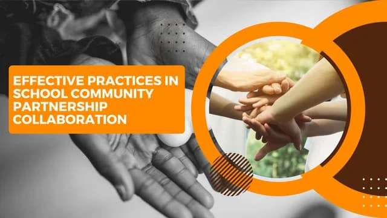
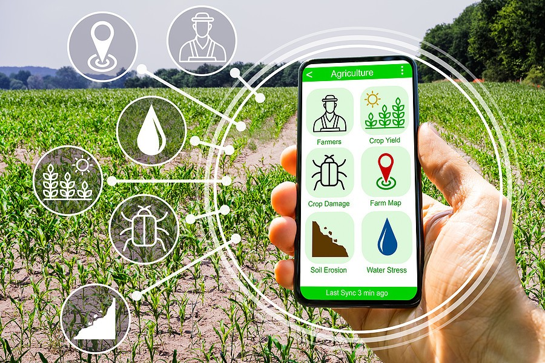

Partnership & Collaboration

Event Recap: Driving Innovation in Environmental Monitoring
Event Recap: Sustainability Summit Highlights Future of Environmental Monitoring.
Read more →New Partnership Announcement: Expanding Global Reach in Environmental Solutions
New Partnership: Strengthening Global Presence in Industrial Emissions Monitoring.
Read more →
Community Engagement: Educating Next Generation on Environmental Responsibility
Community Initiative: Partnering with Schools for Environmental Education.
Read more →
Customer Success Story: Improving Agricultural Sustainability Through IoT Solutions
Customer Success: Precision Farming with IoT Soil Monitoring.
Read more →Industry Focus: Innovating Healthcare Waste Management with IoT
Healthcare Partnership: IoT Solutions for Safe Medical Waste Disposal.
Read more →
Technology Partnership: Harnessing AI for Predictive Environmental Insights
AI Collaboration: Predictive Analytics for Efficient Waste Management.
Read more →